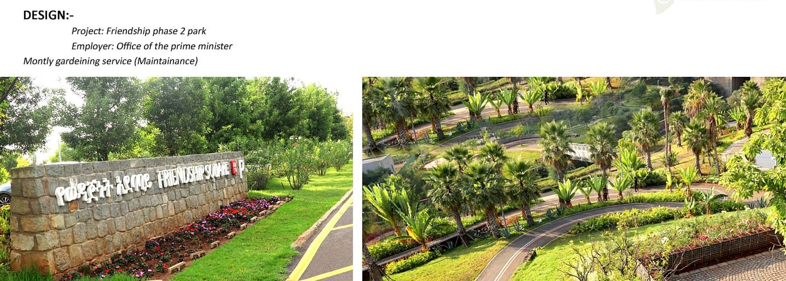
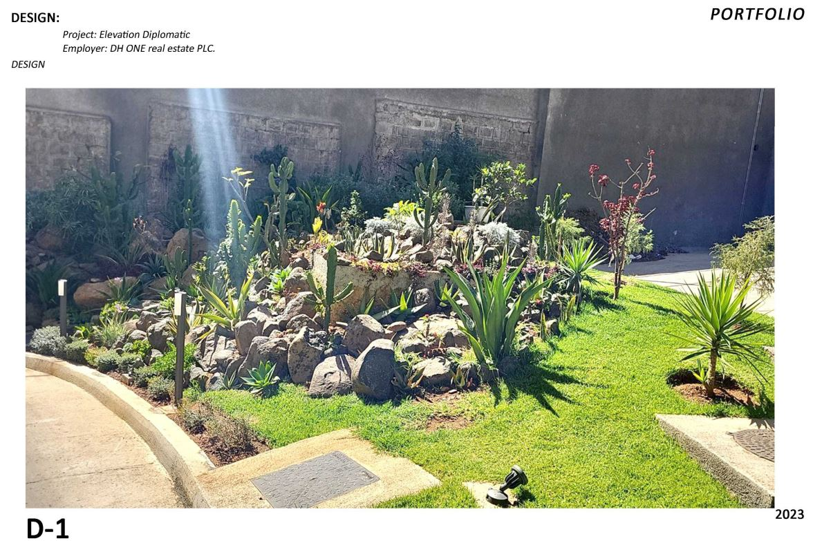
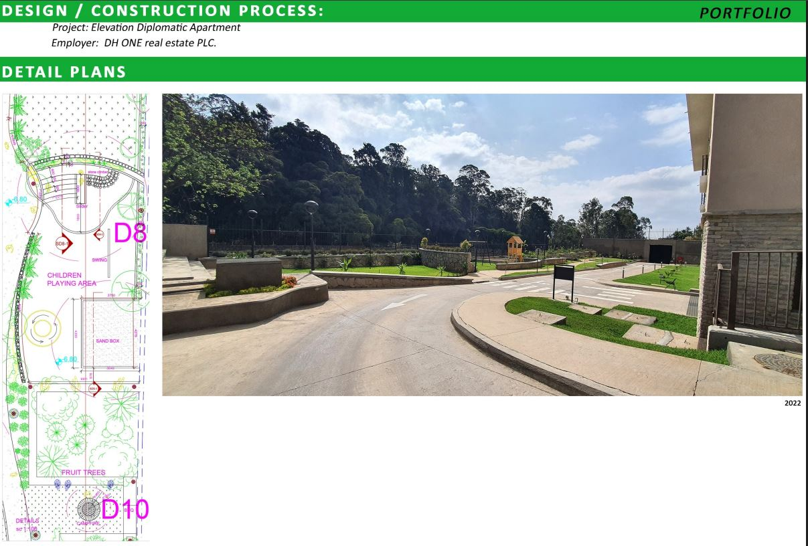
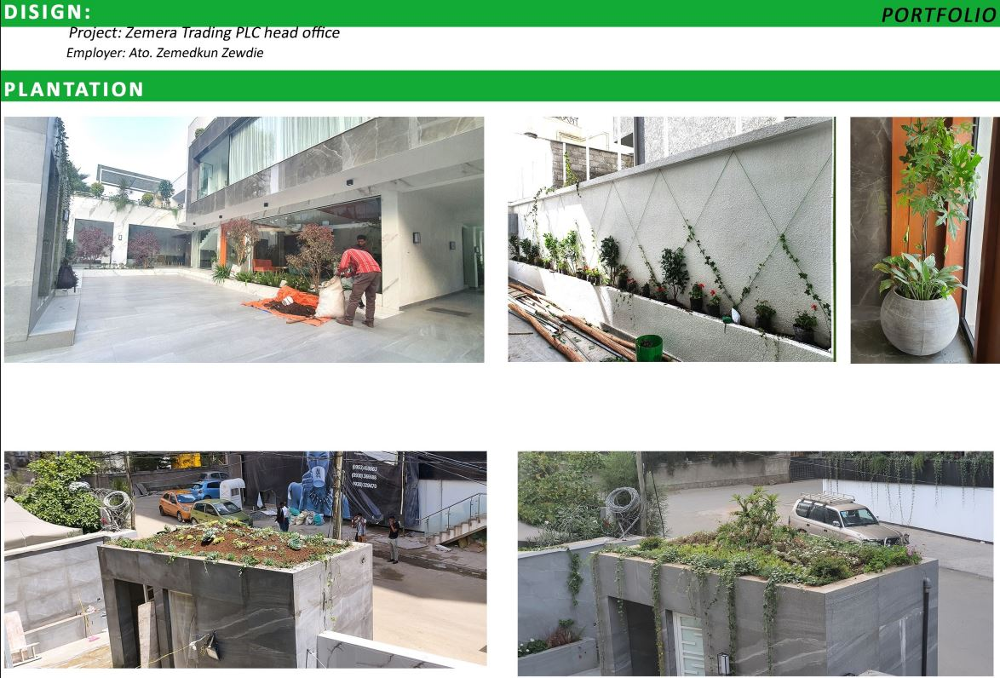
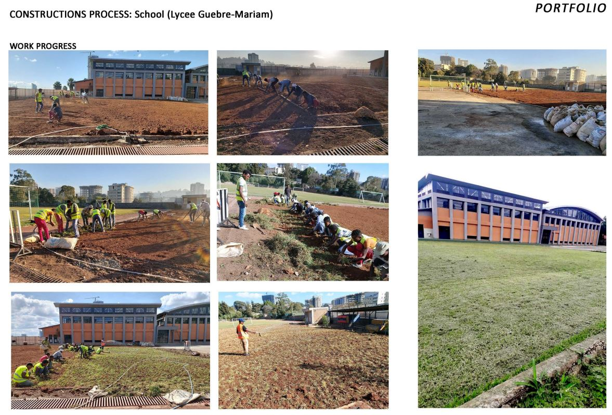
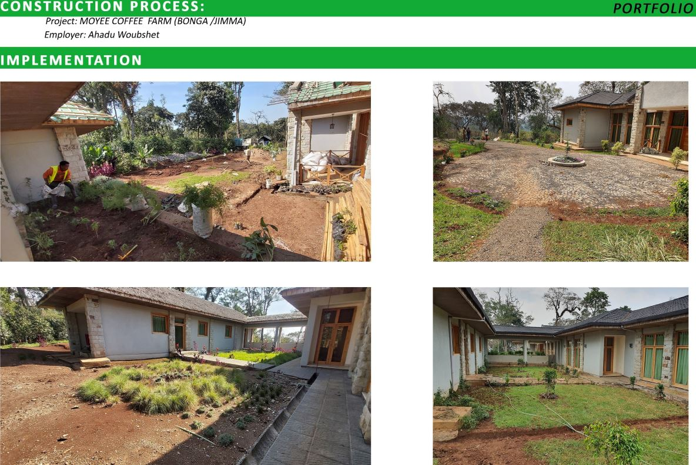
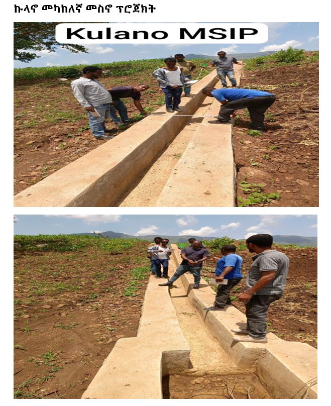

Project work explained with more depth, context, and scope.
These featured projects show how VERT approaches each site with clear design thinking, practical execution,
and landscape work shaped around the needs of the client and the character of the place.
Public landscapeResidential designCommercial plantingInstitutional work

Public Project
Friendship Phase 2 Park
Client: Office of the Prime MinisterScope: Park landscaping and monthly gardening maintenanceLocation: Addis Ababa, Ethiopia
This project reflects VERT's ability to shape public landscape environments that need both strong visual presentation and consistent maintenance quality.
The work centered on lawn care, flower bed arrangement, planted edge definition, and upkeep that helps the site remain dignified and welcoming over time.
Key project qualities
Formal public presentation with clean circulation lines
Flower bed detailing that strengthens the park edge
Lawn and greenery maintenance as part of ongoing service
Landscape care suited to a civic-facing environment
Why it matters
Public landscapes are judged not only by their initial installation, but by how they continue to look through regular use.
This project shows VERT's ability to combine planting presentation with the discipline of monthly maintenance.
Residential Project
Dij Azmach Ayalew Biru Residence
Client: Kasahune KebedeLocation: Olympia, Addis AbabaScope: Concept design, front garden work, and roof garden renovation
This residence project shows VERT's full-cycle residential capability. It began with concept and option development,
moved into built front garden work, and extended to roof garden redesign to improve the beauty and functionality of the home.
Design and implementation scope
Site study and concept board preparation
Landscape layout options with circulation and stormwater thinking
Front lawn and border planting installation
Roof garden concept development and renovation execution
Design outcome
The project balances clean paving lines, planted softness, lawn clarity, and a more composed residential atmosphere.
It is a strong example of how VERT approaches private homes as complete living environments rather than isolated garden pieces.
Concept boards showing site thinking, layout alternatives, and design direction.Front-side garden with lawn, planting beds, and strong visual order.Roof garden development from design options to built outcome.

Commercial Residential Project
Elevation Diplomatic
Client: DH ONE Real Estate PLCScope: Planting design and apartment external landscape detail implementationLocation: Addis Ababa, Ethiopia
Elevation Diplomatic demonstrates VERT's ability to combine visual planting character with the practical requirements of apartment outdoor spaces.
The work includes sculptural planted areas and structured external landscape zones around the development.
Landscape elements
Accent planting with stone and lawn composition
Defined circulation routes and planted edge control
Apartment external space planning and detailing
Outdoor areas shaped for both movement and visual quality
Project value
The project shows how well-planned landscape work can elevate the identity of a development. It creates a cleaner,
more welcoming exterior while also supporting use, movement, and long-term presentation quality.
Feature planting area with sculptural stone, lawn, and accent species.

Built apartment landscape combining circulation, lawn zones, and outdoor usability.

Additional planting language that reflects the polished style used in commercial spaces.

Institutional Work
School and site implementation projects
Featured Works: Lycee Guebre-Mariam, Kulano MSIP, Moyee Coffee Farm, Zemera TradingProject Types: Grounds improvement, infrastructure support, courtyard planting, plantation work
These projects show the breadth of VERT's portfolio beyond finished garden scenes. They include school grounds landscaping,
infrastructure-support work, agricultural site implementation, and commercial plantation-focused projects.
Representative capabilities
School grounds preparation and grass establishment
Drainage-related site infrastructure support
Courtyard and pathway planting around built environments
Plantation, climber, and rooftop greenery work for offices and compounds
What this demonstrates
VERT is not limited to one project type. The portfolio includes technical site work, public-facing greenspace, residential design,
and commercial or institutional environments that require practical execution as well as visual quality.
School grounds improvement showing grass establishment and site refinement.

Coffee farm courtyard and path-related planting implementation.

Infrastructure-support execution that complements wider landscape development.